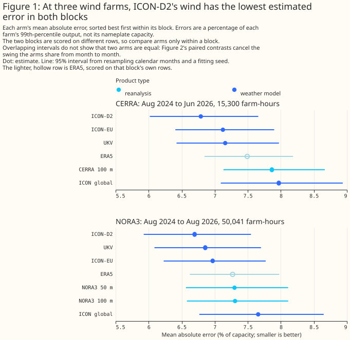
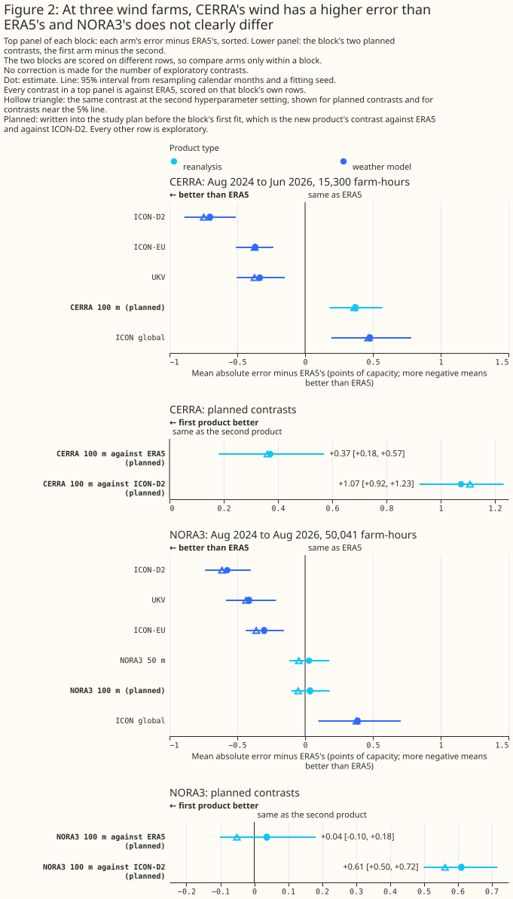

Do CERRA and NORA3 describe past wind better than ERA5?
This study uses only Flexpectation's own data, and its purpose is to inform Flexpectation's choices. The study scores each weather product only at the three metered wind farms in Flexpectation's trial area in Lincolnshire, so a result on this page may not hold elsewhere.
Summary
At three wind farms in Lincolnshire, an XGBoost model given CERRA's 100 m wind has a mean absolute error 0.37 points [+0.18, +0.57] higher than an XGBoost model given ERA5's 100 m wind, and an XGBoost model given NORA3's 100 m wind has an error that does not differ clearly from ERA5's. CERRA is the Copernicus European Regional ReAnalysis, at 5.5 km and every 3 hours. NORA3 is the Norwegian Meteorological Institute's 3 km regional hindcast, at every hour. ERA5 is the reanalysis of the European Centre for Medium-Range Weather Forecasts. Each product's wind was read at 100 m, scored by an XGBoost model fitted per wind farm, with the same recipe as the main wind page. Each error is a percentage of the farm's capacity (its 99th percentile of metered output), each difference is in percentage points of capacity, written "points", and each bracketed pair is a 95% interval. The CERRA rows are 15,300 farm-hours to 30 June 2026, where a farm-hour is one wind farm's power in one hour. The NORA3 rows are 50,041 farm-hours to 31 August 2026. Both contrasts are planned, meaning written into the study plan before the first fit.
Most of CERRA's deficit sits at one farm, and NORA3's difference from ERA5 is bounded but has no sign. CERRA minus ERA5 is +0.90 points at farm W1, +0.09 at W2, and +0.12 at W3. NORA3 minus ERA5 is +0.04 points [-0.10, +0.18], changes sign to -0.05 points [-0.18, +0.09] at the second hyperparameter setting, and has 3 and 2 of 5 folds agreeing at the two settings. The per-farm figures are point estimates, and the Results give each farm's interval. In both blocks the XGBoost model given ICON-D2's 80 m wind has the lowest point estimate of the six or seven products. Its gap to each new product is a planned contrast, and its gap to ERA5 is exploratory. Both gaps are statistically significant at the 5% level, with all 5 folds agreeing at both settings. This page does not test ICON-D2 against UKV or ICON-EU (see the main wind page). The two blocks are scored on different rows, so the page does not compare CERRA with NORA3.


How this page was made. The research question came from a human. Everything else — the code behind every result, the analysis, the figures, and the text — was written by Claude, Anthropic's AI model. This page and its chart script were written by Claude Sonnet 5.5, reusing the fitting script and shared study code written by Claude Opus 5.5, Claude Sonnet 5, and Claude Sonnet 5.5. Independent Claude Opus reviews checked the method and the results adversarially. No Claude reviewer has swept this page's prose. The Claude model that wrote the page swept it once, one prose rule at a time.
Key findings
- CERRA's 100 m wind gives a higher error than ERA5's, mostly at one farm. The CERRA results give the figures.
- NORA3's 100 m wind gives an error within about 0.18 points of ERA5's in either direction. The NORA3 results give the figures.
- ICON-D2 has the lowest point estimate in both blocks. The page tests ICON-D2 only against the new product and against ERA5.
Introduction
Flexpectation needs to know whether a regional reanalysis describes past wind at its farms as well as ERA5 does. A reanalysis with a longer history could supply more training years for an XGBoost model than the forecast archives the main wind page scores. CERRA and NORA3 are two regional reanalyses at finer grid spacing than ERA5, and this page asks only whether the wind each reanalysis describes gives an XGBoost model a lower error at three wind farms in Lincolnshire.
Data and methods
Each block refits the five products of the main wind page and the new product on the rows where the new product has a value, so every contrast is within one block. The five products are ERA5, UKV, ICON-D2, ICON-EU, and ICON global. The fitting recipe is the main wind block's, and the Methods page states the month-block folds, the capacity normalisation, and the intervals. Every XGBoost model reads seven columns: the product's wind speed, the sine and cosine of the same product's wind direction, the product's 10 m speed, the hour of day, the day of year, and an era code. ERA5, CERRA, NORA3, and UKV are read at 100 m, and the ICON products at 80 m. Each XGBoost model is fitted twice, at the primary and the second hyperparameter setting.
| Block | Product | Resolution | Hours of the day | Rows | Period |
|---|---|---|---|---|---|
| CERRA | CERRA at 100 m | 5.5 km, 3-hourly | 8 (00, 03, ..., 21 UTC) | 15,300 farm-hours (5,110, 5,288, and 4,902 at W1, W2, and W3) | 12 August 2024 to 30 June 2026 |
| NORA3 | NORA3 at 100 m, and at 50 m | 3 km, hourly | 24 | 50,041 farm-hours (16,657, 17,308, and 16,076) | 12 August 2024 to 31 August 2026 |
Planned contrasts are the two written into the study plan before the first fit, in each block: the new product's error minus ERA5's, and the new product's error minus ICON-D2's. Every other number on the page is exploratory. A test counts a difference as statistically significant at the 5% level when its 95% interval, from resampling whole calendar months and one of three fitting seeds, lies wholly on one side of zero. The test covers month-to-month weather and the fitting seed, and does not cover differences between the three farms. The page does not correct for the number of exploratory comparisons, and among them about 1 in 20 with no true difference would reach significance by chance. Because the comparisons share their months, spurious results cluster rather than falling independently. The CERRA intervals rest on 23 calendar months and the NORA3 intervals on 25.
This page scores CERRA at 100 m only. CERRA's 50, 75, and 150 m wind, with its direction, is not in these results. The CERRA wind-levels page scores CERRA's speed at five heights, without direction, on a longer row set. NORA3 at 50 m is in the NORA3 run and is exploratory.
The NORA3 block's rows are the 50,041 farm-hours that the ICON-DREAM-EU block of the main wind page also scores, and ERA5's error differs between the two pages. ERA5's error is 7.270 here and 7.285 there, because each page refits every XGBoost model and the refit moves ERA5's error by 0.015 points. The study did not isolate the reason.
Every scored row has training data from its own calendar month, except CERRA's July rows, 4.5% of the CERRA block, which no fold design can cover. In the CERRA block, 0.0% of scored rows are in a calendar month, seen in two or more years, with no training row in their fold, and 4.5% are in a calendar month seen in one year only (July, which falls in 2025 alone), which no fold design can cover. In the NORA3 block both shares are 0.0%.
Results
CERRA's 100 m wind has a higher error than ERA5's, mostly at one farm
CERRA at 100 m has an error of 7.864% of capacity [7.132, 8.666], against 7.491% [6.844, 8.185] for ERA5. The planned contrast, CERRA minus ERA5, is +0.372 points [+0.181, +0.570], statistically significant at the 5% level, with all 5 folds agreeing. At the second setting it is +0.361 points [+0.173, +0.551], again with 5 of 5 folds agreeing. The deficit is uneven across farms: the per-farm CERRA minus ERA5 is +0.902 points [+0.641, +1.164] at W1, +0.094 points [-0.113, +0.317] at W2, and +0.122 points [-0.141, +0.427] at W3, so most of the pooled +0.37 comes from W1. Each per-farm interval resamples months within one farm and does not cover differences between farms, and the W2 and W3 intervals include zero. The study does not explain why W1 differs.
ICON-D2 has the lowest point estimate of the six products in the CERRA block. The planned contrast, CERRA minus ICON-D2, is +1.075 points [+0.921, +1.232], with 5 of 5 folds agreeing at both settings. ICON-D2 minus ERA5 is -0.702 points [-0.891, -0.511] (exploratory). The page does not test ICON-D2 against UKV or ICON-EU, whose intervals in Figure 1 overlap ICON-D2's.
| Block row | Absolute errors, primary setting (second setting) | Difference at the primary setting | Difference at the second setting | Folds agreeing at both settings |
|---|---|---|---|---|
| CERRA 100 m minus ERA5, planned | 7.864 against 7.491 (7.842 against 7.482) | +0.372 [+0.181, +0.570] | +0.361 [+0.173, +0.551] | 5 of 5 |
| CERRA 100 m minus ICON-D2, planned | 7.864 against 6.789 (7.842 against 6.735) | +1.075 [+0.921, +1.232] | +1.108 [+0.967, +1.248] | 5 of 5 |
| CERRA 100 m minus UKV | 7.864 against 7.158 (7.842 against 7.109) | +0.706 [+0.575, +0.844] | +0.734 [+0.610, +0.868] | 5 of 5 |
| CERRA 100 m minus ICON-EU | 7.864 against 7.123 (7.842 against 7.109) | +0.741 [+0.618, +0.861] | +0.733 [+0.619, +0.850] | 5 of 5 |
| CERRA 100 m minus ICON global | 7.864 against 7.969 (7.842 against 7.947) | -0.106 [-0.374, +0.159] | -0.105 [-0.378, +0.151] | 3 of 5 |
| ICON-D2 minus ERA5 | 6.789 against 7.491 (6.735 against 7.482) | -0.702 [-0.891, -0.511] | -0.747 [-0.913, -0.580] | 5 of 5 |
CERRA against ICON global is unresolved. The difference of -0.106 points [-0.374, +0.159] is not statistically significant at the 5% level, and the page does not claim the two products match.
NORA3's 100 m wind does not differ clearly from ERA5's
NORA3 at 100 m has an error of 7.307% of capacity [6.579, 8.111], against 7.270% [6.624, 7.976] for ERA5. The planned contrast, NORA3 minus ERA5, is +0.037 points [-0.101, +0.181], not statistically significant at the 5% level, with 3 of 5 folds agreeing. At the second setting it is -0.051 points [-0.181, +0.092], with 2 of 5 folds agreeing. The two settings give opposite signs, so the result is a bounded null: an effect of the size of the intervals' ends, about 0.18 points, is not excluded in either direction. By farm, NORA3 minus ERA5 is +0.192 points [+0.034, +0.361] at W1, -0.171 points [-0.377, +0.040] at W2, and +0.101 points [-0.076, +0.280] at W3. The W1 interval lies wholly above zero, and the per-farm intervals do not cover differences between farms.
ICON-D2 has the lowest point estimate of the seven products in the NORA3 block. The planned contrast, NORA3 minus ICON-D2, is +0.611 points [+0.500, +0.717], with 5 of 5 folds agreeing at both settings. NORA3's error is also higher than UKV's (+0.451) and ICON-EU's (+0.339), both exploratory. The page does not test ICON-D2 against UKV or ICON-EU. NORA3 at 50 m differs from NORA3 at 100 m by -0.008 points [-0.039, +0.024] (exploratory), so a difference between the two heights larger than 0.04 points either way is excluded at these farms.
| Block row | Absolute errors, primary setting (second setting) | Difference at the primary setting | Difference at the second setting | Folds agreeing, primary (second) |
|---|---|---|---|---|
| NORA3 100 m minus ERA5, planned | 7.307 against 7.270 (7.238 against 7.289) | +0.037 [-0.101, +0.181] | -0.051 [-0.181, +0.092] | 3 of 5 (2 of 5) |
| NORA3 100 m minus ICON-D2, planned | 7.307 against 6.695 (7.238 against 6.676) | +0.611 [+0.500, +0.717] | +0.563 [+0.446, +0.676] | 5 of 5 (5 of 5) |
| NORA3 100 m minus UKV | 7.307 against 6.856 (7.238 against 6.854) | +0.451 [+0.308, +0.588] | +0.384 [+0.239, +0.521] | 5 of 5 (5 of 5) |
| NORA3 100 m minus ICON-EU | 7.307 against 6.968 (7.238 against 6.929) | +0.339 [+0.232, +0.432] | +0.309 [+0.214, +0.401] | 5 of 5 (5 of 5) |
| NORA3 100 m minus ICON global | 7.307 against 7.657 (7.238 against 7.667) | -0.350 [-0.591, -0.142] | -0.429 [-0.682, -0.203] | 5 of 5 (5 of 5) |
| ICON-D2 minus ERA5 | 6.695 against 7.270 (6.676 against 7.289) | -0.574 [-0.738, -0.400] | -0.613 [-0.777, -0.437] | 5 of 5 (5 of 5) |
| NORA3 50 m minus NORA3 100 m | 7.299 against 7.307 (7.242 against 7.238) | -0.008 [-0.039, +0.024] | +0.004 [-0.028, +0.036] | 3 of 5 (2 of 5) |
The page does not read the NORA3 gap to ICON global as a finding about NORA3. The difference of -0.350 points comes entirely from W3 (-1.084 points [-1.732, -0.511]), while W1 gives +0.081 points [-0.050, +0.210] and W2 gives -0.083 points [-0.228, +0.061].
Discussion: what to use
For describing past wind at these three farms, ERA5 remains the reference, and neither CERRA nor NORA3 is shown to improve on ERA5. CERRA's error is higher than ERA5's at both settings, so these farms give no reason to switch to CERRA at 100 m. NORA3's error differs from ERA5's by no more than about 0.18 points either way, so NORA3 is a candidate substitute where its hourly values or its longer history are needed. These conclusions would change with more farms, with a measured lead for NORA3, or with a turbine height other than 100 m.
Limitations
- The two blocks are not comparable with each other. They differ in rows, in the hours of the day scored (8 against 24), in period, and in fitted XGBoost models. Even the ERA5 rows differ, at 7.491 in the CERRA block and 7.270 in the NORA3 block. The page therefore does not rank CERRA against NORA3, whether directly or through their gaps to ERA5.
- The products are scored at different leads. CERRA's wind and ERA5's wind are analyses. NORA3's hourly values are short-range forecasts from a 6-hourly cycle, and this study did not measure their lead, so it cannot say which way equal leads would move the NORA3 gap. UKV is served at T+0, ICON-D2 and ICON-EU at 0 to 2 hours into the run, and ICON global at 0 to 5 hours (see the main wind page's limitations), so ICON-D2's gaps to CERRA and NORA3 mix product quality with lead, and the page cannot say which way equal leads would move them.
- Three farms are few independent sites. The intervals describe these farms, from August 2024 onwards, at 100 m (80 m for the ICON products), and do not cover differences between farms. The farms' turbine heights are unknown, so a height other than 100 m might suit a farm better.
- The page makes no general claim that downscaling adds nothing over ERA5. The result applies to these three farms, this period, and these XGBoost settings.
- The figures rest on the same
effective_capacitytable as the main wind page. A rebuilt table would move every figure. - No reanalysis row here is a forecast. The study says nothing about forecast skill.
Scope
The study covers CERRA and NORA3 at 100 m, and NORA3 at 50 m, as XGBoost inputs for describing past wind at three farms. It does not cover CERRA at 50, 75, or 150 m, the lead of NORA3's values, or any region other than the Lincolnshire trial area.
Data and code availability
Every input except the farms' metered output, their coordinates, and the capacity table is
public. CERRA is from the Copernicus Climate Data Store, NORA3 from the Norwegian Meteorological
Institute's open archive, and the other five products come as the main wind page
describes. The nearest cell of each grid to each farm is 0.8 to 2.5 km away for CERRA and 1.0 to 1.5
km for NORA3, pooled across the three farms. The XGBoost settings are those of the main wind page,
with no column subsampling, and the XGBoost version is 3.4.1, the version in uv.lock (the saved
losses do not record the version that fitted them). Every fit ran on the CPU. The code is in
studies/beam_diffuse_split/ and packages/studies/, and the commit that merged this page holds
the version that produced the figures.
Reproducing the figures
Fit each block, then draw the figures. The fit script refuses to overwrite its saved losses. The
chart script recomputes every drawn number from the saved losses, stops unless each matches the
fit script's report, and writes a new per_site.md beside each report, holding the per-farm
differences with their intervals that the page quotes.
uv run python studies/beam_diffuse_split/reanalysis_past_wind.py --product cerra
uv run python studies/beam_diffuse_split/reanalysis_past_wind.py --product nora3
uv run python studies/beam_diffuse_split/reanalysis_past_wind_charts.py
npx svgo@4 --multipass --precision=1 --final-newline docs/studies/assets/reanalysis_wind_*.svg